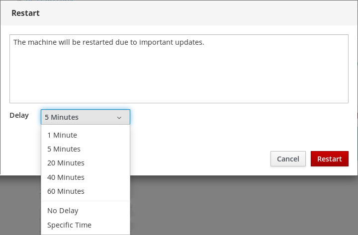
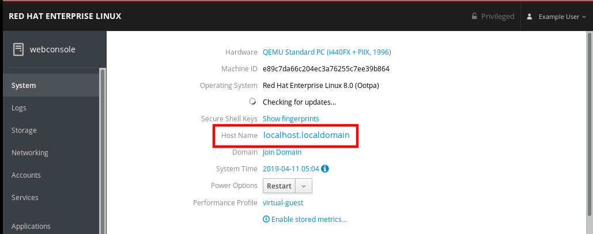
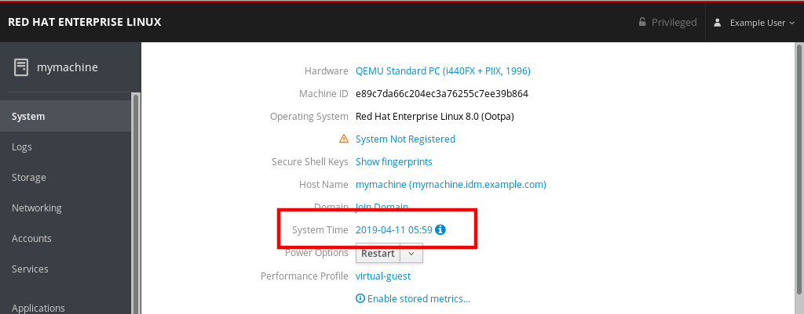
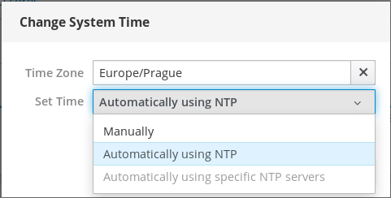

In this chapter, you will learn how to execute basic system settings in the web console and thus be able to:
- Restart or shutdown the system in the web console.
- Change a system host name.
- Join the system to a domain.
- Configure time and time zones.
- Change a performance profile.
The following procedure describes system restart executed in the web console.
Prerequisites
The web console must be installed and accessible.
For details, see Installing the web console.
Procedure
Log in to the RHEL 8 web console.
For details, see Logging in to the web console.
- Click System.
In the Power Options drop down list, select Restart.

- If there are users logged into the system, write a reason for the restart in the Restart dialog box.
In the Delay drop down list, select a time interval.

- Click Restart.
The system will be restarted according to your selection.
The following procedure describes system shutdown executed in the web console.
Prerequisites
The web console must be installed and accessible.
For details, see Installing the web console.
Procedure
Log in to the RHEL 8 web console.
For details, see Logging in to the web console.
- Click System.
In the Power Options drop down list, select Shut Down.
- If there are users logged into the system, write a reason for the shutdown in the Shut Down dialog box.
- In the Delay drop down list, select a time interval.
- Click Shut Down.
The system will be turned off according to your selection.
The host name identifies the system. By default, the host name is set to localhost, but you can change it.
Host names consists of two parts:
- Host name — It is a unique name which identifies a system.
-
Domain — If you want to use the machine in the network and use names instead of just IP addresses, you need to add the domain as a suffix behind the host name. For example:
mymachine.example.com
You can configure also a pretty host name in the RHEL web console. The pretty host name allows you to enter a host name with capital letters, spaces, and so on. The pretty host name displays in the web console, but it does not have to correspond with the host name.
Example:
Pretty host name: My Machine Host name: mymachine Real host name (Fully qualified domain name): mymachine.idm.company.com
Host names are stored in the /etc/hostname file, however, you can set or change the host name in the web console.
Prerequisites
The web console must be installed and accessible.
For details, see Installing the web console.
Procedure
Log in to the RHEL 8 web console.
For details, see Logging in to the web console.
- Click System.
Click the current host name.

- In the Change Host Name dialog box, enter the host name in the Pretty Host Name field.
In the Real Host Name field, the pretty name will be compounded with a domain name.
You can change the host name manually if it does not correspond with the pretty host name.
Click Change.

To verify that the host name is configured properly, try to log out from the web console and add to the browser the address with the new host name.

The following procedure describes joining the RHEL 8 system to the IdM domain.
Prerequisites
- IdM domain running and reachable from the client you want to join.
- IdM domain administrator credentials.
Procedure
Log in to the RHEL web console.
For details, see Logging in to the web console.
- Open the System tab.
Click Join Domain.

- In the Join a Domain dialog box, enter the host name of the IdM server in the Domain Address field.
In the Authentication drop down list, select if you want to use password or one time password for authentication.

- In the Domain Administrator Name field, enter the user name of the IdM administration account.
- In the password field, add the password or one time password according to what you selected in the Authentication drop down list above.
Click Join.

If the RHEL 8 web console did not display an error, the system has been joined to the IdM domain and you can see the domain name in the System screen.

Warning
If you click to the joined domain in the System screen, the system will display a warning dialog with the information about leaving the domain. If you click Leave, the system will leave the domain.

This section shows you how to set:
- The correct time zone
- Automatic time settings provided by an NTP server.
- A specific NTP server.
Prerequisites
The web console must be installed and accessible.
For details, see Installing the web console.
Procedure
Log in to the RHEL 8 web console.
For details, see Logging in to the web console.
- Click System.
Click the current system time.

- In the Change System Time dialog box, change the time zone if necessary.
In the Set Time drop down menu, select:
- Manually
- Automatically using NTP server — This is a default option. If the time of the system is correct, leave it as it is.
- Automatically using specific NTP servers — Use this option only if you need to synchronize the system with a specific NTP server and add the DNS name or IP address of the server.
Click Change.

The change is now available in the System tab.
Red Hat Enterprise Linux 8 includes performance profiles optimizing:
- Systems using Desktop
- Latency performance
- Network performance
- Low power consumption
- Virtual machines
The following procedure describes setting up performance profiles in the web console.
The RHEL 8 web console configures the tuned service.
For details about the tuned service, see Monitoring and managing system status and performance.
Prerequisites
The web console must be installed and accessible.
For details, see Installing the web console.
Procedure
Log in to the RHEL 8 web console.
For details, see Logging in to the web console.
- Click System.
In the Performance Profile field, click the current performance profile.

- In the Change Performance Profile dialog box, change the profile if necessary.
Click Change.

The change is now available in the System tab.